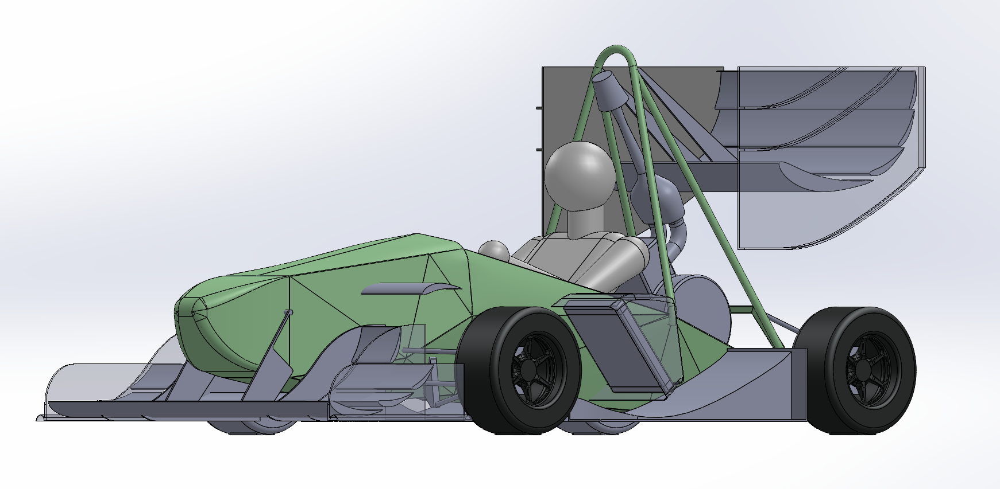

Duke Motorsports
All Motorsports projects
Select the front wing to see the project.
Formula SAE front wing
I split the main element to address separation, changed the profiles from NACA 8412 to Eppler 423, and swept the new arrangement in CFD. Curved footplates help preserve the low-pressure region beneath the wing.
Read the full project